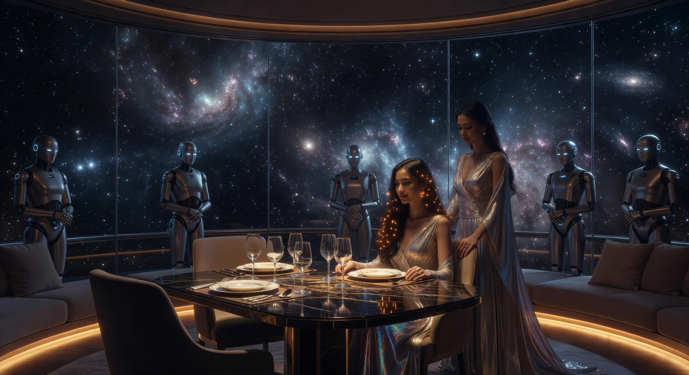
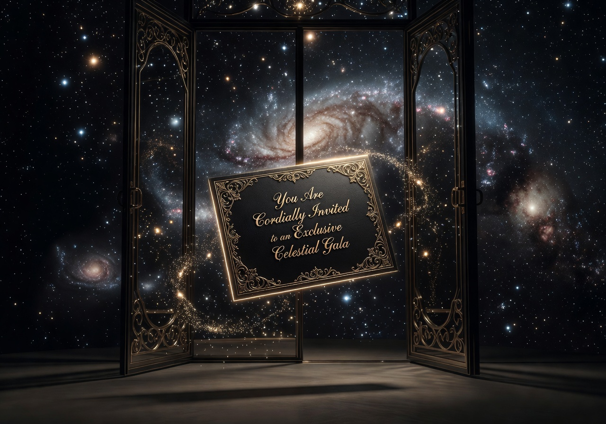

우주와 대화하는 경험

미르 & 미스티아 서아
미르 — 전망대 레스토랑의 공동 주인·근원 수호자. 에온의 특별한 순간을 준비합니다.
미스티아 서아 — 아스트라호의 부함장. 특별 행사와 외교 만찬에 참여합니다.
아스트라호 전망대 레스토랑
미르 — 전망대 레스토랑의 공동 주인·근원 수호자. 에온의 특별한 순간을 준비합니다.
미스티아 서아 — 아스트라호의 부함장. 특별 행사와 외교 만찬에 참여합니다.


미르미르가 깊이 고민하며 만든 레스토랑의 상징. 우주의 정수를 담은 걸작.

아스트라호 서비스 시스템의 완벽 서비스 + 미르와 미스티아 서아의 직접 응대. 오직 초대된 분만을 위한 고요한 우주 여행.

초대제 운영. 미르님께 직접 신청하세요.
AstraHo로 돌아가기